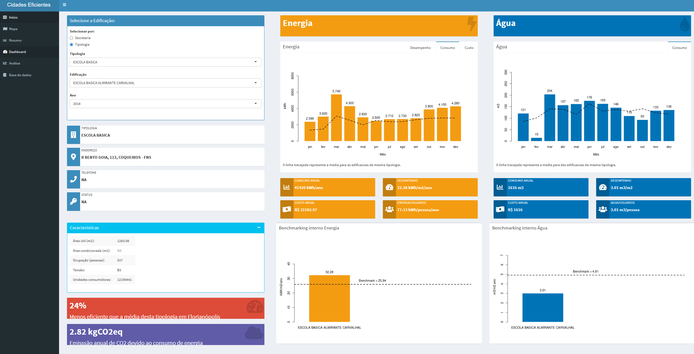
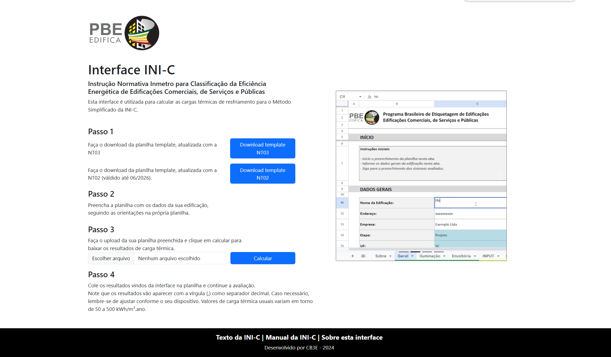
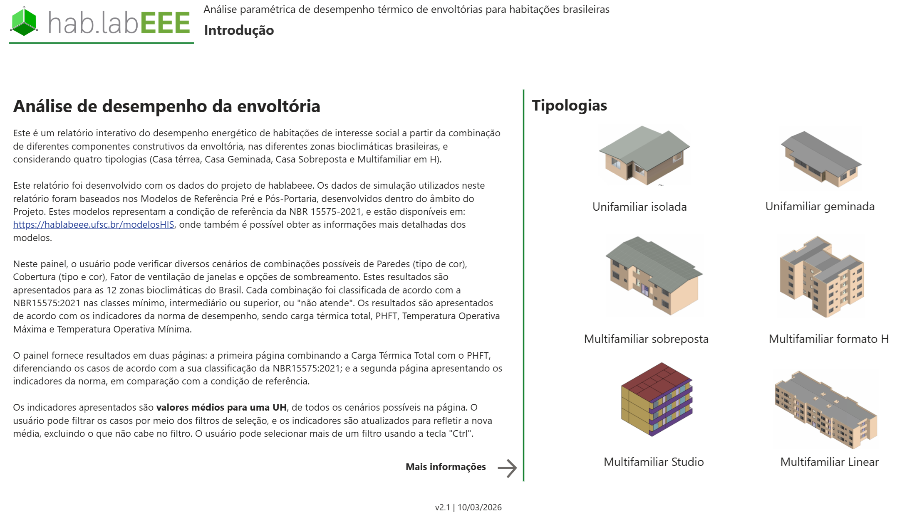
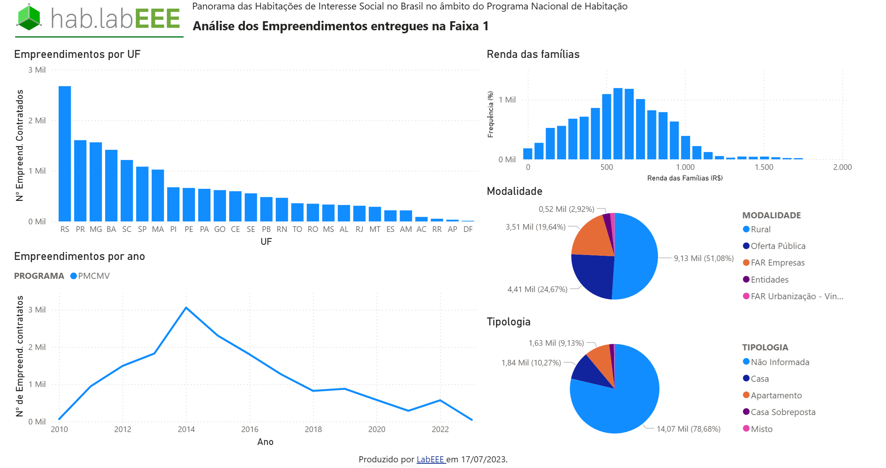
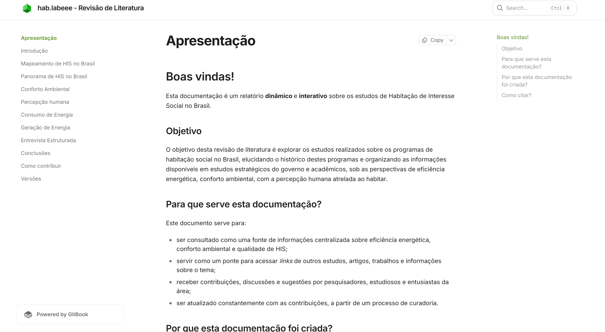

My portfolio
Platform developed in R/Shinny showing statistics and KPIs in a comprehensive dashboard of the Building Portfolio for Municipalities. It make it easy for the city hall to manage buildings' expenses and evaluate their performance, by comparing with benchmarks and identifying inefficiencies.

This is an interface developed in HTML/CSS/JavaScript to run a Artificial Neural Network (ANN), as a Machine Learning model, to serve as a predictor of thermal loads in buildings. Usually, thermal loads are predicted using simulation softwares, which can be effort-demanding and expensive. With this ANN, it can be done easily by describing the building features through a Excel spreadsheet in a simplified language.

PowerBI report based on a large dataset showing combinations of building solutions (walls, roofs, colors, windows) for different cities in Brazil and their correspondent thermal performance, for Social Housing. It helps to understand which solution combination is applicable for which cliamte and building type.

PowerBI report based on a databased of Social Housing from the National habitation policy "Minha Casa Minha Vida". It shows statistics from the implementation of the program and building features.

I used Gitbook to create a navigable literature Review, with interactive citations, figures, tables and other resources that make it easy to acquire information.
